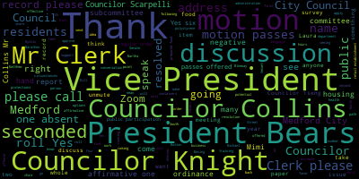
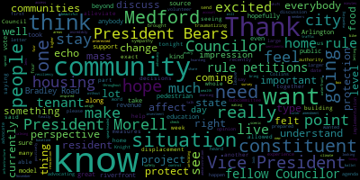

AI-generated transcript of City Council 04-12-22
English | español | português | 中国人 | kreyol ayisyen | tiếng việt | ខ្មែរ | русский | عربي | 한국인
Back to all transcripts
[Hurtubise]: Vice President Bears present Council KVL Council Collins present Council night right now to script Kelly president president present seven present zero absent please rise to salute the flag.
[Morell]: The motion of Councilor Knight to suspend the rules to take public participation out of order, seconded by Councilor Caraviello. Mr. Clerk, please call the roll.
[Hurtubise]: Vice President Bears.
[Unidentified]: Yes.
[Hurtubise]: Councilor Caraviello.
[Unidentified]: Yes.
[Hurtubise]: Councilor Collins. Yes. Councilor Knight.
[Unidentified]: Yes.
[Hurtubise]: Councilor Scarpelli.
[Unidentified]: Yes.
[Hurtubise]: Councilor Tseng. Yes. President Morell.
[Morell]: Yes, I'm in for zero and negative. The motion passes. Public participation. Is there anyone in the chambers or on Zoom who would like to speak under public participation? If you're in the chambers, feel free to come up to the podium. On Zoom, please raise your hand or flag us down. Is there anyone who would like to speak under public participation on any topic?
[Bears]: I would just remind residents that they will have the opportunity to speak on agenda items after this as well. But this is the opportunity that if an item is not on the agenda to speak.
[Morell]: Correct. If there are any items not on the agenda that you'd like to speak on, please come up to the podium or raise your hand on Zoom. I do see one hand. Raphael and Laura, I'm going to unmute you. You could just share your name and address for the record, please. Oops, you're still muted. You should see a box. I can hit it again.
[SPEAKER_12]: I'm Laura Panette. Can you hear me? Yes. Thank you. I'm Laura Panette and I live at 40 Tesla Avenue in Medford. And I'm here to speak on the fair share amendment.
[Morell]: OK, you can speak when that item comes up. We'll be getting to that briefly. We're just looking for anyone who would like to speak on items that are not on the agenda. But thank you. We will come back to you. Let's see. I'm not seeing any hands on Zoom. I'm not seeing anyone in person who would like to speak. So I have it away from us unless or we can revert back to regular order of business. On the motion of Councilor Knight to revert back to the regular order of business second by Councilor Caraviello Mr. Clerk, please call the roll.
[Hurtubise]: Yes. Yes. Yes. Yes. Yes. Yes.
[Morell]: Yes, I'm in front of zero negative emotion passes regular order of business motions orders and resolutions 22-305 offered by Councilor Knight. Be it so resolved that the Medford City Council thank bill Mazaka for his 47.5 years of service to the city of Medford's public schools. Be it further resolved that the Medford City Council extend its congratulations and best wishes to Mr. Mazaka on his retirement Councilor Knight.
[Knight]: Madam President, thank you very much. Any of us that have gone through Medford High over the past, I guess, what looks like 50 years will be very familiar with Bill Mazzacca. He was a security officer there for the last 47 and a half years where we went to school every day during rain, snow, sleet, and hail to protect the children in the city of Medford. But he's always been a great individual, a great public servant, and someone that I've always respected. It was very interesting when I brought my son up to kids corner for daycare, and I sat there and my son said, Oh, I was talking to Mr. Bill. And I look over and there's Bill Mosaic, who was Mr. Bill, when I was a student at Medford High School. But he's just a gentleman who's dedicated his whole life to this community. Someone who's done great good for the students in the city of Medford. And he's someone that deserves a little bit of recognition for the hard work that he put in. He's someone that was always behind the scenes a man of not many words, but great action. He's someone that the city of Medford should be very thankful that they had the opportunity to have for 47 and a half years. So with that being said, Madam President, I'm asking my colleagues to join me in extending some congratulatory notes to Mr. Mazeka in the momentous occasion of his retirement.
[Morell]: Thank you, Councilor Knight, and I apologize for the mispronunciation. I wasn't privileged to have him. Councilor Scarpelli.
[Scarpelli]: Thank you, Madam President. Thank you, Councilor Knight, for bringing this forward. True words couldn't be spoken. Mr. Mosaic is a true gentleman. When you're talking about the last of The old guard that I remember in high school where there was a team of maybe six security guards that roam the vast hallways of Medford High School keeping the peace. As time went on, Mr. Mosaica became the total opposite of what you think a security guard was. He was a person that kids could speak to, a person that when you needed a strong arm, he was there. When you needed an ear to talk to, he gave it to you. And I think every kid that walks the halls at Medford High School, love and respect Mr. Mosaica. He is truly a gentleman. It was, I don't think I've ever heard a negative word said about Mr. Mosaic. And it is a contentious job, you know, at times you have to be the heavy in the school, where it's a suspension or removal of a student or, you know, or a faculty member, Mr. Mosaic was the person that had to be that heavy. And he was always there with respect and kindness. And I'm glad that he's retiring and I wish him well and his family well. So thank you, Madam President, for giving me the moment.
[Morell]: Thank you, Councilor Scarpelli.
[Tseng]: I also had the privilege of getting to know Mr. Nzeka back in my four years at the high school. He was a loved member of our school community, and to be able to congratulate him on such a momentous occasion is truly a privilege. I think all of us have specific memories of, you know, just seeing him welcoming us into the high school every day, seeing him walk around the building. You know, he was someone who really built trust with all of our students at the high school. So I'm very grateful for his service to our city, and I wish him the best in his retirement.
[Morell]: Thank you, Councilor Tsai. On the motion of Councilor Knight, seconded by Councilor Scarpelli. Mr. Clerk, please call the roll.
[Hurtubise]: Vice President Bears. Yes, that's a Caribbean. Yes. Yes. President Morell.
[Morell]: Yes. So I mean the firm is here in the negative the motion passes to two dash 306 offered by Vice President Bears and Councilor Collins be it so resolved that the Metro City Council by the Medford City Council that we support the proposed fair share amendment that would create an additional tax of four percentage points on annual income above $1 million and dedicate the funds raised by this tax to quality public education affordable public colleges and universities, and for the repair and maintenance of roads, bridges, and public transportation. Vice President Bears.
[Bears]: Thank you, Madam President. The fair share amendment has been a major topic of conversation in Massachusetts for nearly a decade. I think too often it is used as an excuse for the state not to fund schools, fund colleges, and fund roads now because we'll do it when the fair share amendment happens. Luckily enough, we are here. The fair share amendment is on the ballot for the November 2022 election. This would raise funds for the state that would go towards public education, public colleges and universities and our transit and roads. I think all of us know how deeply needed these funds are for municipalities like Medford and the campaign to support this amendment when it's on the ballot in November is currently soliciting the support of city councils across the Commonwealth. I would like to add our voice to that chorus of city councils, and I would move approval on this resolution.
[Collins]: Thank you, President Morell. I just want to echo Vice President Bears's sentiments. I'm so excited for the fair share amendment to finally be on the ballot. You know, and I think looking at this through the lens of how this would affect the city like Medford, you know, is the perspective that I, you know, that I hope my fellow Councilors and, you know, really every resident and voter in Medford beyond to take into account, you know, public education, public higher education, roads, infrastructure, hopefully climate change resiliency, you know, these are areas where we need new revenue sources. We can't do the things that we need to be the kind of community that we want to be, to live in the kind of community that we want to live in, without revenues for these incredibly important projects. And, you know, the source is right. When there's so much need spread throughout our communities, you know, we need to shift from a model of wealth hoarding to a model of making sure that we bring up the baseline for the parts of our communities that are in most need of investment. So I thank Vice President Bears for his advocacy of this, and I'll be excited to vote in support and then vote in support in November as well. Thank you.
[Morell]: Thank you, Councilor Collins. Any further discussion from Councilors? Moving on to the public, I'm going to return to you, Laura. We do have, you already have the name and address or address for the record. You just state your name again. We already have your address and then go right ahead.
[SPEAKER_12]: Yes, Laura Panette. Thank you very much for the opportunity to speak tonight. As was just stated, there are several reasons, there are a number of reasons to be in favor of the fair share amendment. I'm here speaking both as the parent of a graduate of Medford Public Schools, and also as a faculty member at the University of Massachusetts Lowell. And I'm looking at the benefits both for our K-12 schools in Massachusetts and also for public higher education. I want to point to the extreme need for additional staffing in K-12 schools, not only regular classroom teachers, but also ESPs, the valuable support personnel in the schools. to support every child. It's a long time since our public schools had librarians or music teachers who were in the building for more than a few minutes a week. College Councilors are a wide variety of support staff who are badly needed by the children of the Commonwealth. As a faculty member at the University of Massachusetts Lowell, I'm privileged to work with many students who are first generation in their families to be in higher education. They don't come from settings where their parents know all about how to get into college or how to succeed once they get there. They also need and deserve extra support services. And this is again, part of what the fair share amendment could contribute in terms of supporting the aspirations of the next generation of our residents. And I'd also like to point to the physical plant, both in K-12 schools and in higher education. Many school buildings are old. We've seen, especially during the pandemic, the critical problems with inadequate ventilation, not enough fresh air coming in, not enough ability to filter air and prevent transmission of the COVID virus or other transmissible diseases. There are buildings that have mold and even mushrooms growing in them because of the extreme lack of adequate ventilation. So there's a wide range of needs that have been put off for a long time in being dealt with. Thank you very much for your attention.
[Morell]: Thank you, Laura. Any further discussion from the public? Name and address for the record, please.
[Tringali]: forestry. This is the I'm not familiar with the Fair Share Amendment Act, but so I have a couple questions. How is the money being managed and diverted to the cities and towns? Once this once this money is collected, if this gets approved at a state level, and people are taxed 4% that money then goes into a state must mean some state account. So how, how is it diverted to the cities and towns?
[Bears]: Madam President, thank you. So, this would only apply to income over $1 million so any income you make under $1 million would not be subject to the time I understand that that wasn't my question. We said people would be taxed 4% of only be people's income over $1 million. And it's obviously subject to the appropriation by the state legislature, but generally, you know, one of the biggest expenditures in the state legislature is Chapter 70, which is the multi-billion dollar fund that diverts state aid to local schools. Chapter 90 is a similar program which diverts state funding to roads, bridges, municipalities. So increases in those amounts for Chapter 70 or Chapter 90 would come through the existing formula to the city of Medford. And additionally, they could, you know, earmark for specific projects. For example, the West Medford commuter rail upgrade station upgrades. That could be one thing. I mean, it obviously would be subject to the appropriation by the legislature. But the way the ballot question is written, the money has to be spent on public education, public higher education and transit and roads.
[Tringali]: So we don't know, though, how much money would actually be coming to the city of Medford.
[Bears]: Oh, that not at this point, but more.
[Tringali]: more than the 1.9 billion money that was as we get in any. So, that's including the SSR money that already that we're getting.
[Bears]: This is not in relation to the SSR or anything like that. No, I know it's not related but we are getting funds from those, those other places right, I believe, the city's allocation from ARPA was about $50 million in one time funds spread out over five years.
[Tringali]: Okay, thank you.
[Morell]: on the motion of Vice President Bears, seconded by Councilor Collins. Mr. Clerk, before we call the roll, Councilor Knight has recused himself from the debate and the vote.
[Hurtubise]: Vice President Bears.
[Unidentified]: Yes.
[Hurtubise]: Councilor Caraviello. Councilor Collins?
[Unidentified]: Yes.
[Hurtubise]: Councilor Knight has recused himself.
[xyqJQrsXvc0_SPEAKER_18]: As a state employee.
[Hurtubise]: Councilor Scarpelli? Yes. Councilor Tseng? Yes.
[Morell]: Yes. Four in the affirmative, two in the negative, one recused, the motion passes. 22-307 offered by Vice President Bears. Be it resolved that the Medford City Council expresses its support of Senate Bill 1819, an act establishing a commission on the status of citizens of Haitian descent. Be it further resolved that the city clerk forward a copy of the resolution to the Medford legislative delegation, as well as House Speaker Mariano and Senate President Spilker. Vice President Bears.
[Bears]: Thank you, Madam President. This is a resolution requesting that we support statewide commission on the status of citizens of Haitian descent. Community leaders in Medford's Haitian community have reached out regarding this item, and the intent of this commission would be to look at a number of issues facing Haitian communities across the Commonwealth. We have one of the largest Haitian American communities in the whole country here in Massachusetts, and as many people know, there are a number of issues We've discussed previously this term that affect the Haitian community when it comes to immigration, federal, state policy, and this commission would be a voice for members of the Haitian community across the state to issue reports and request action by our state government. And I would move approval.
[Morell]: Any further discussion from the council? Councilor Tseng.
[Tseng]: Um, this is in line with the values of our city as a welcoming, inclusive place. I think this is, um, you know, this resolution is something that reflects who we are as a city. Um, and the support that we all, um, we all want to show for our Haitian neighbors. Um, this is in line with what we've passed as a city council before. And I think, um, Councilor, uh, bears for putting this on the agenda tonight. And I second his motion.
[Morell]: Thank you, Councilor Tseng. Any further discussion? Any discussion from the public? Councilor Naik.
[Knight]: I certainly understand that the city of Medford has a very strong Haitian population. Growing up in this community, I've gone to school and come friends with a number of people that are from Haitian descent. And I certainly have no problem with a commission on the status of citizens of Haitian descent that's being created by the state legislature. But I've said it before, I'll say it again. I'm not putting my name on a letter. going to speak of Mariano or Senate Spelker, unless it's us asking for money for the city, because pretty soon they're going to become tone deaf to the wants and desires of our community. Um, so for that reason, I'll be voting against this this evening. Um, I certainly support the piece of legislation as a private citizen, but as a member of this body, I don't feel as though it's good practice for us to continue to put our noses into what's going on with the state. Um, I haven't never gotten a letter from a state delegation telling us to vote a certain way in a resolution that's before this council. If we want our delegation to come down and present to us and talk to us about some of these pieces of legislation, I think that might be a little bit more productive because, well, Council of Business is pretty well-versed in a lot of this stuff. I don't think all of us are. And I think a lot of us would be a little bit more comfortable if maybe we had members of our delegation come down and talk to us, tell us what this bill does and why they're in favor of it or why they're opposed to it. And then the council can make a determination as to whether or not we want to encourage our delegation, the people that represent us on Beacon Hill, to support that. So with that being said, I thank the council for bringing the measure forward. And I also thank him for being so up to date and involved in the goings on at Beacon Hill. However, my focus here is in the city of Medford. And I think that this council really needs to take a look at what's going on in this community. And if we're going to Beacon Hill, well, one thing we need more than anything is money. So that's what I think we should be asking for. But I thank the council for the resolution.
[Scarpelli]: Thank you, Council President. Thank you, Councilor Biazzi. This is, I know that you do your due diligence, but again, I've represented myself in the same fashion Councilor Knight has spoken, so it would not be legal to point, but I will not support this paper for those facts as well, so thank you.
[Morell]: Thank you, Councilor Powell. Any further discussion from the Council or the public? On the motion of Vice President Bears is seconded by Councilor Tseng. Mr. Clerk, please call the roll.
[Hurtubise]: Vice President Bears.
[SPEAKER_06]: Yes.
[Hurtubise]: Councilor Caraviello. Councilor Collins.
[SPEAKER_06]: Yes.
[Hurtubise]: Councilor Knight. So, Councilor Scarpelli. So noted, Councilor Tseng.
[Unidentified]: Yes.
[Hurtubise]: President Morell.
[Morell]: Yes. Or in the affirmative three in the negative the motion passes. 22-308 offered by Vice President Bears. Be it resolved by the Medford City Council that the city administration inform residents about the Mystic to Bikeway survey currently underway to explore pedestrian and multimodal path improvements in Medford and Arlington to connect the Mystic River to the Minuteman Bikeway. You can fill out the survey and make your voice heard at tinyurl.com slash mystic to bikeway survey and the number two. Vice President Bears.
[Bears]: While it may not be within the walls of Medford, it certainly will affect our city. And this item is about a project that's currently undergoing review, mostly in Arlington, but it will connect a piece of Medford, the bridge between the two rotaries on High Street Route 60. And there are a couple of different routes currently being explored, but it would connect essentially that area of the Mystic River to the Minuteman bikeway in Arlington. And there's a essentially if you go to the survey tiny url.com slash mystic to bikeway survey to you can look at a set of plans that are currently proposed it would, I think, personally as someone who has driven through these rotaries and then walked near these rotaries relatively frequently significantly improve traffic safety in that area for all modes of transportation. which is kind of why I put it on I think that's a great benefit for the city of Medford in and of itself, but it will also connect the mystic pathways to the Arlington Minuteman bikeway. So, I would love the city administration to let residents know that this project is happening I didn't hear about it from Medford I heard about it from. I think a different group I'd actually can't remember quite right now, but also that residents can fill out the survey. where they can review the plans and let their voice be heard. Again, the URL is tinyurl.com slash mystic to bikeway survey number two, the number and then the number two and I would move approval.
[Collins]: Thank you, President Morell. And thank you, Vice President Bears, for letting everybody know that this is going on. For anybody who's interested in learning more about it, I took the survey myself today. It took under 10 minutes. They have a box to check. Are you a constituent from Arlington? Are you a constituent from Medford? I think this is a great thing for our community members to weigh in on. It will affect this community. And even going beyond that, this is the type of project that I hope that our city administration can really look to and be inspired by. You know, I think we talk a lot about how much more we could be doing with our riverfront, how much more we want to be doing about traffic calming, pedestrian safety, expanding pedestrian and bike access along our beautiful scenic waterfront. So I'm excited to see how this is spearheaded by the community of Arlington, how it affects our community positively. and I really hope that we can see projects like this unfolding along the, you know, the riverfront that we control here in Medford as well. Thank you.
[Morell]: Thank you, Councilor Collins.
[Tseng]: Councilor Tseng? I believe that as a community, if we want to see something change, we need to show up at the table, and I think this is one of the ways we can show up and have our voice be heard. You know, knocking on doors through the last campaign season, something I heard from a lot of families was, was the desire for us to have a grand scheme of bike, a network of bikes, bike lanes that kind of connected better to other cities and that was better integrated in our, that was better integrated in our own community. I think this is, taking surveys like this is one of the most important ways through which our community, our constituents, our residents can make our voices heard and to make sure that, you know, that grant money so that some of that grant money does come to Medford and that we have that kind of more, that better, better planned out, better thought out bike network that we want to see here in Medford. So I think Councilor Bears, we're putting this on the agenda.
[Morell]: Thank you, Councilor Tseng. Any further discussion from the Council? Councilor Knight.
[Knight]: Madam President, yes, I'll be supporting this measure this evening. If we remember back to the mistake River Watershed Association and the presentation that they made to us several years ago when they were coming to us for some community development block grant funding or CPA funding I believe it was. and they were seeking funds to design a shared use path along the Mystic River down to Shannon Beach and then beyond Shannon Beach down to Wedgman Station. I think that this is a key link to us bringing that project to fruition. It's gonna allow us to connect the multimodal transportation roadways to the two train stations as well. So that's gonna be something very beneficial to the communities to split the people out of them.
[Morell]: Thank you, Councilor Knight. Any further discussion from the council? Moving on to the public. I see Mimi Gordon on Zoom. Mimi, name and address for the record, please. I see a box asking you to unmute when you're ready. Mimi, if you're able to unmute, I'll give you another moment. While we wait for Mimi, is there anyone else who would like to speak on this paper? And if I could, from the chair, as we wait for Mimi, I mean, this is something that's come before the council in different versions, not exactly the survey, but issues that happen in this area, particularly as you're walking around the beautiful paths along the Mississippi River towards the lakes, you're dumped out into a rotary. There's no crosswalk, there's no safe way to cross. And if you bike, walk, drive by there any beautiful day, you're seeing people try to scramble across the bridge right there. So hopefully this is something that would address that as far as many other issues. residents to take the survey if they can, and I thank Vice President Bears for bringing this to the attention of the council and to residents in this forum. Mimi, are you able to unmute? I do see, okay, so while we wait for Mimi, I see Martha Andres. Martha, name and address for the record, please.
[Andrus]: Yeah, Martha Andres, 45 Kilgore Avenue, Medford, Mass. I am excited about this project. It was initiated by Arlington, but it does include, I would say a third of the people who showed up for public participation were from Medford. And we're very excited about having the rotaries at the High Street Bridge dealt with. to make them safer for driving, safer for pedestrians, safer for bicyclists. You know, this is an area that, especially since the pandemic, everybody wants to be outdoors and walking in a beautiful area along the river. And this is so important to us to make this project happen. As Councilor Knight has pointed out, you know, there's been some interest in improving the path on the other side of the river. on the Medford side and you know hopefully that will follow from this improvement. Thank you for bringing it up.
[Morell]: Thank you Martha and we'll maybe we'll try you once more to see if we can get you to unmute and share. I did see you briefly unmuted before but Okay, Mimi, we're going to move forward. If you have comments, you can send them to the clerk or any of the individual Councilors. So on the motion of Vice President Bears, seconded by Councilor Collins, Mr. Clerk, please call the roll.
[Hurtubise]: Vice President Bears? Yes. Councilor Kariviello is absent. Councilor Collins?
[SPEAKER_06]: Yes.
[Hurtubise]: Councilor Naik? Yes. Councilor Scarpelli? Yes. Councilor Tseng?
[SPEAKER_06]: Yes.
[Hurtubise]: President Morell.
[Morell]: Yes. 16 affirmative one absent in motion passes. 22-309 offered by Vice President Bears be it resolved by the Medford City Council that the Department of Public Works and Director of Traffic and Transportation report to the Council regarding the potential to work in partnership with the City of Somerville to establish a shared use path on the northeast side of Auburn Street across from the current Whole Foods to provide a safer crossing of Auburn Street for members of the public in connection to existing paths and of Parkland along Mystic Valley Parkway. Vice President Bears.
[Bears]: Thank you, Madam President. Resolution is relatively self-explanatory, but essentially the land on the riverbank across from Whole Foods, part of it is owned by the city of Menford, part of it is owned by the city of Somerville. There's currently not a path or sidewalk on that side of the street, which means that people have to cross at the relatively dangerous intersection of Auburn and Route 16 across the Auburn Street Bridge. residents in the area said that they would really benefit from a connection on this side of the road. And I'd love to see if our city administration can reach out to partners in the city of Somerville. I've reached out to a couple of councillors in the city of Somerville who said that they would be interested. So I'm hopeful that we can build that partnership and make things a little safer and more accessible at that area. Thank you.
[Knight]: I believe that stretch of roadway is DCR controlled. The crossing right from Route 16. The crossing is yes. I know Councilor Caraviello is going to run for that. I know that he's been working with them on the guide rails as well with DCR. So I think the DCR would have to be involved in doing anything that doesn't cross their road or block their road.
[Bears]: the crossing would actually be on the Medford-controlled section of Auburn, well, potentially on the Medford-controlled section of Auburn Street, and the land, that bank is owned by the city, it's not by DCR, so we may need to collaborate with them to connect it, but it's mostly out of their jurisdiction, which in this case, I think is a good thing.
[Morell]: Thank you, Councilor Knight. Any further discussion from the Council? Any discussion from the public? On the motion of Vice President Bears, seconded by Councilor Collins, Mr. Clerk, please call the roll.
[Hurtubise]: Vice President Bears. Yes. Councilor Caraviello-Lazzaro. Yes. Councilor Collins.
[SPEAKER_06]: Yes.
[Hurtubise]: Councilor Knight. Yes. Councilor Scarpelli. Yes. Councilor Tseng.
[SPEAKER_06]: Yes.
[Hurtubise]: President Morell.
[Morell]: Yes. Six in the affirmative, one absent, the motion passes. 22-310 offered by Vice President Bears, whereas the city of Medford
And Councilor Collins, whereas the city of Medford and greater Boston region are in the midst of a deep housing crisis that is displacing residents and families and whereas the city of Medford saw 15% year over year increase in average rents from March 2021 to March 2022 and a 5% increase in average rents from February, 2022 to March, 2022, according to GBH news. And whereas many Medford residents are facing significant rent increases or other methods of displacement from rental units. Now, therefore be it resolved by the Medford city council at the housing subcommittee meet to discuss the potential of drafting home rule petitions on the following policies to protect Medford residents facing housing instability and a lack of affordable housing options. including rent stabilization, tenant right to purchase, tenant right to counsel, just cause eviction protections, regulation of upfront lease fees, anti-price gouging protections, and exemptions for small owner-occupant landlords. be it further resolved that the Housing Subcommittee discuss a potential council resolution supporting House Bill 1378 and Senate Bill 886, an act enabling local options for tenant protections currently under consideration by the Massachusetts legislature. Vice President Bears or Councilor Collins?
[Bears]: I'm happy to go first. And if my fellow councilors would like to sever the votes on the resolve and the further resolve, I'm more than happy to do it. You know, we've been talking about this issue for a while, since I've been on the council, since before I was on the council, of housing, the housing crisis and the issues facing a lot of longtime residents of our community. We had some really good work in subcommittee last term, addressing emergency issues around the COVID pandemic. And I think we did a lot of good work on that as a council. coming out of the pandemic or into the latest phase or however we want to countenance it, the housing situation is deteriorating rapidly. We just had residents in here for the past couple of weeks who are facing displacement from units that they've lived in for decades. And the intent seems to be on that, that these long-term residents are being forced out. you know, just so that we can do a quick renovation and then raise the rents by a certain amount and then bring in a new type of person. The intent here is that the housing subcommittee look at a variety of options as we discussed last week you know the city's authority here is significantly limited by state law. So on a number of items on all of these items discussed we would have to file a home real petition and request action from the state for the city to do anything. I listed these these different policy items I personally support all of them I understand that if the council may support some of them and not others so I think we want to have that discussion and maybe look at them separately. One of the key things about all of these items, as well as the, the state legislation that again You know this resolution just asked that the housing subcommittee discuss a potential resolution regarding that state legislation. All of these would have as currently constituted would have exempt exemptions, you know for small owner occupant landlords this is really talking about people buying these 2030 unit buildings are building large luxury apartments or we're seeing now resale of large apartment complexes and the resulting rate rent increases. So really the focus is on is on those properties and what we can do as a city to try to limit the deep impact you know 15% rent increase in a year is really unsustainable and I think we're going to keep seeing that with just the high demand. and the regional issues around housing. And it's really important that as a city, we do our best to advocate for as much power as we can possibly have to make sure that residents have housing stability and aren't facing the trauma and deep emotional, financial and personal impacts that displacement and other forms of types of you know, eviction have on them. So that's the intent of this resolution here, is that we have the housing committee discuss what we can ask the state to return power to our community to do. And I would move approval on that, obviously, pending discussion of the council.
[Morell]: Thank you, Vice President Bears. Councilor Collins, then Councilor Knight.
[Collins]: Thank you, President Morell, and thank you, Vice President Bears, for going through the resolution so thoroughly. And I appreciate you bringing up the context of the mass displacement that we're already starting to see in Medford over the past week. We had residents from the building on Bradley Road, some of whom are in attendance tonight, who were telling us about what they're currently going through with that exact type of situation, with where we are currently in the housing market, the housing crisis coming out of the pandemic as we seem to be doing. You know, mass mass displacement of tenants from our community from the community that they want to live in. And what really shapes me about this whole situation is the fact that, you know, our hands are so tied as Council as a city for what we're able to do to protect the people who live in our community who want to stay here. protect our constituents, the people that we represent, and that's because of these many, you know, potentially more impactful tenant protection, really just constituent protection measures that we're not allowed to do because of because of decisions affected on the state level. That's the reason that these tenant protections are being considered as home rule petitions. For anybody who's unfamiliar, measures such as rent stabilization are illegal in Massachusetts. And I think this has been said by others before me, but I think it's a very frustrating position to be in, to be hearing from constituents saying, We want to stay in this community. We want to continue being a part of this community and to be so very constrained in what we can do to effectuate helping people stay in this community. With just the situation that we're currently seeing on Bradley Road, I think it's been incredible coming together of housing advocates, people who've been through this type of situation before, residents coming together to see how they can help one another, mutual aid volunteers, just trying to alleviate a really painful, traumatizing, expensive situation for a lot of people, but there's a limit to how much you can volunteer and advocate your way out of a situation. And that's why we need to be advocating for changes to what we as a city are allowed to do to help people stay in our community. And that's why I'm excited to take up these potential home rule petitions in the housing subcommittee. And just to briefly touch on, I know it's a, It's not a four letter word, but it's a four letter and numeral word. I understand that, you know, some of my fellow Councilors would, you know, totally understand my fellow Councilor's perspective on advocating for things at the state level. But, you know, I feel strongly about this one in particular because it directly relates to our authority as a council. It's saying, please give us authority back to make decisions about what's right for our community here at the community level. Um, well, and I'll leave it there. Thank you.
[Morell]: Thank you.
[Knight]: Madam president. Thank you very much. Um, when looking at the language of this, first of all, it looks very much like a rent control bill to me. Um, rent stabilization, anti price gouging protection. Sounds like rent control to me. Um, it's a homerun petition and we're going to the legislature. We're asking them to let mention create its own laws and make its own specific set of laws for just people live in this community. This is gonna go to the state legislature and it's gonna go right in the circular file. All right, it's good for show. In practice, it's never gonna happen. We're talking about a regional housing crisis, but each community that we live in is gonna have different rules of application as to how it applies. I think it's also important that we look at the policies that we adopt. If we take some blame for the rising cost of housing in our community, when we advocate for the Green Line, We know the Green Line brings increased property values. When we advocate for the revitalization of Medford Square, and we ask people to present proposals on how we can improve and better our downtowns, we're part of the issue. We're the government, right? And we're asking people, how can we revitalize downtown? Bradley Road's right downtown. We're saying, let's bring the Green Line. Well, we know the Green Line's gonna bring high property values. We've been waiting 20 years for the Green Line to come. We still don't have a parking plan for Ball Square, as we're going to notice if we look at this. We knew it was coming. We've known it's been coming for two decades. We've known it's been coming for two decades. We can't address the problems that have followed in our purview and the problems that followed in our scope. Is it really reasonable for us to think that we're going to be able to create laws that are different than those of the Commonwealth of Massachusetts that just affect just our community right here that relate to something as large scale as a regional housing crisis? I don't think so. Personally, I'm going to vote against it. And I don't find it reasonable for us to go create rent control locally in one community. I think this is something that does need to be addressed at the state level. If I were a little bit more familiar with these two bills, if I had like a state rep and some staff on my team, and I'd have them research the bills and provide the bill summaries and the like. But as of right now, I just think that this is nothing more than a, hey, we tried. It didn't pass up at the state house. Blame the rep, it's not my fault, right? That's what it looks like to me. It doesn't look like it's rooted in reality. I appreciate the gentleman for bringing the issues to the table, and I appreciate the lady for bringing the issues to the table. But we've seen bills like this filed in other communities, and they've gone nowhere.
[Morell]: They've gone nowhere.
[Knight]: I mean, and the reason why they've gone nowhere is because we can't just have one set of rules for Medford, a different set of rules for Somerville, a different set of rules for Allington when it comes to something like housing. When we're trying to go with the Metropolitan Area Planning Council and address a regional crisis, we can't have rules that just work in one area and not in another.
[Morell]: Thank you, Councilor Knight. Vice President Bears.
[Bears]: We used to, and it worked well. And then the housing lobby and rich people in the W communities voted away our rights. So that's the fundamental story here. We used to have tools. And then they were taken away from people who don't live here, by people who don't live here. That's the story at the end of the day. Do I agree that it's a long hike? Yes. Do I agree with what you said that our reps are trying and quite frankly failing? Yes, I agree with that. It's not happening. And I don't even necessarily speak to our reps. At least two of our reps are supportive of all of this legislation, signed onto the bills that are here. You know, when we talk about why it's important for this city council to add our voice to a chorus. It's because the only way that anything gets done is when it's overwhelming demand from the people of the Commonwealth. Clearly that's the bar and the threshold of the state legislature, which is the sovereign authority of our state, which has the power to give and take our control over our community at a whim. They've decided it's an incredibly high bar. You have to, you know, do the Fair Share Amendment. It's going to take eight years to do the Fair Share Amendment when we're talking about millionaires making more money than they've ever made in their life. It's going to take you years. And then we're going to throw it in the trash when we're talking about a 15% rent hike in Medford. If they don't want to do their job, let us do the job. That's the purpose of this right here. Many communities, it started out in one community or two communities. It started out with the communities that had rent control and then had it stripped away from them in 1994. Sure. I'm not talking even about going back to those policies. That's not even necessarily what I'm saying. What we're looking at now is a much more targeted and defined policy saying if 8% a year isn't enough for you, whatever is going to be enough for you. I mean, basically the rules of the market as set now are if you're a renter, we can do whatever we want to you. And if we're a giant corporate property owner and landowner, we can make as much money as we want over the right to shelter. That's not a fair playing field. And it's our job to stand up and say we deserve power and tools as a community to level the playing field for the people who live here. That's the purpose here. I understand it's a long shot. Many things in life are a long shot. I don't think that means we shouldn't try. That's why I put this on the agenda with Councilor Collins. we should at least try. Maybe we'll lose, but at least we can say we tried and we believe that these are the tools and powers and opportunities that we need as a community to make sure that when we talk about a Green Line extension or a new high school or revitalizing our squares, that doesn't mean that that's just for rich people. I don't think just rich people deserve a nice high school or a nice Medford Square or access to public transit. I think we can create a set of policies and rules that allow growth and development and expansion to happen and benefit people in a broad range of incomes and preserve the income and economic diversity that we have as a community. I think that your point is well taken, that the past 20 years of inaction have left us in a very difficult position. Now we're going to really have to put the pedal to the metal to make sure that the vision of what people see Medford as, as a working class community, as a community where people of all incomes and all backgrounds can come together and live and work and play. Yeah, it's going to be hard. It's going to be hard to do that now, because there's been inaction and the state won't let us do anything. A lot of what I come up here on a variety of issues. We're going to talk about ball square. I think we just did a decent job with the zoning recodification to address some of those principles and make it so that we have more options for affordability for people. But it's all tools in the toolbox. It's all hands on deck. And this is another way that we can try to help. Medford residents, hey, and maybe we'll do it so well, all the communities around us will adopt it too, and then we'll have a regional model, and then we'll have solved the regional housing crisis, because that's the goal here. That's why the bill at the end would give the power to do all of these to all communities in the state. You know, this isn't even just an issue in Boston and regional, it's an issue in Nantucket. It's an issue in North Hampton. It's an issue everywhere. That's why people from across the state, councils from across the state, are putting forward resolutions like this and filing home rule petitions and trying to say, hey, state legislature, we understand that there are certain interests that have a very loud voice and have your ear. We think, hey, maybe the people should be the biggest interest on Beacon Hill. So that's what this is about. And I understand the position of my fellow Councilors. But what I just said is my position. And I hope everyone will. vote for this. Thank you.
[Morell]: Thank you very soon. Affairs. Any further discussion from the council for members of the public?
[xyqJQrsXvc0_SPEAKER_18]: I'm Lisa Maloney of 26 Bradley Road. And with all due respect, none of us are looking for rent control. Do you know what I mean? That's not no one's looking for that. In our case, we're just hoping for more time. 30 days is absolutely not realistic. to find something else, right? And I know this has been extended to 60 days, which is still very difficult. So I really applaud you for your willingness to kind of consider this and take this up because I think we wanna show more compassion, right? Just for tenants who have lived some over 25 years in that building. So how do we wanna be as a society? I hope a little bit more compassionate So no one's looking again for rent control or a handout or anything like that, right? We understand Bradley Road is right in Medford Center, right? And the building is in a great location. That's why it was attractive to the developers. But again, to kick residents to the curb in 30 days is really, it's unconscionable. I can tell you that.
[Morell]: Thank you. Vice President Ferris.
[Bears]: Thank you, Madam President. I think this is my third time, so I'll stop here. But to that exact point, you know, some of these things, you know, one of the big issues was is the fees, right? The upfront fees, first, last broker's fee, right? It's a really high burden and a high bar to pull all that together when you have 30 days or 60 days notice. That's one of the items in here. Just cause eviction protections to provide more time for folks. You know, I'm not saying we're going to get everything in here, but even one of these things would help. even one of these things would help. So that's why there's a list of policy ideas here that we can use. And I'll stop there. Thank you.
[Morell]: Thank you, Vice President Barros. Name and address for the record, please.
[Petrella]: Hi, my name's John Petrello. I live at 61 Locust Street, Method Mass. Very noble cause, what we're trying to do here. But we're rehashing something that's already been done. And it's basically what you're trying to do is rent control. It never worked before. It's not going to work now. That's all. It never worked. We've had it all over the place. It's a failure. The second thing I'd like to say is I take exception to rich people. I don't call my rich friends rich. I just call them successful. Nothing wrong in this country with being successful. That's okay too, okay? So I do take exception to rich people, like there's something wrong with them. But it's a very noble cause. I appreciate what you're trying to do here, I do. But it's been rehashed, it's been done. It never worked before. So maybe we can think outside the box, come up with something, I don't know. But it's something to discuss. This is not gonna work. So that's all I can say, I mean.
[Morell]: Thank you.
[Collins]: That's it.
[Morell]: Councilor Collins.
[Collins]: Thank you, President Morell. And I just wanna echo something that Vice President Bears said. Again, not to belabor the point, the discussion tonight is only whether or not to send this to subcommittee to discuss further. What if any, hopefully many, in my opinion, I think everybody knows my opinion. home rule petitions to send to our state delegation in order to say, you know, we need more tools to protect the people who want to stay in this community. To echo Vice President Beard's point that he just made, you know, for situations like the ones that we're seeing very recently in our community, any one of these would make a difference in the experience of a person who all of a sudden they have to move out of their home, you know, their home. Any one of these could, alleviate that experience of something traumatizing and heartbreaking happening that you didn't know was going to happen and you had no role in it. And I also want to say, you know, in the aftermath, and I know these home rule petitions are not about the specific situation that's going on on Bradley Road, but I know that when, you know, myself and my other Councilors first heard about it, I think I'll assume that we all felt sympathy, you know, felt distraught, felt, you know, my gosh, I can't believe that some of my constituents are going to have to leave you know, not because they wanted to, but because they were forced to. And I think it's important to know. We heard from our city housing staff just last week that we can expect this exact same situation to happen again very soon at another large apartment building that was also recently sold elsewhere in Medford. And so I just, you know, as perspective for why I feel very passionate about this being on the agenda, being able to discuss this further is because, you know, we can feel upset over and over again. We can feel sympathy for our constituents over and over again. We can feel heartbroken over and over again. But yeah, it's not in my theory of change to not try to do everything that we have in our power to do, even if sometimes we're tilting at windmills, what else can we do? So I thank my fellow councilors for their consideration, and I hope that this is something that we can discuss further. Thank you.
[Morell]: Thank you, Councilor Collins. Councilor Tseng.
[Tseng]: I think I'm my fellow Councilors Councilors Collins and bears have made very strong and very compelling arguments for why we should pass this resolution tonight. And I believe, you know, I believe you're it's really about. We we recognize that we're in a place where we aren't, we can't we just can't do as much as we want to do. And this is. One of the only ways right now that we one of the only paths that we can take forward out of this situation, and it's it's a difficult path. It's, and it will require a lot of work, and we have to be prepared to be disappointed, but if we never step forward on this path we. We really aren't doing our jobs as city Councilors, we're not really, you know, we won't be advocating for the public we won't be advocating for people who are being who are going to be kicked out of their houses. And I know there's been a lot of focus on rent control, and I, you know, I'm actually someone who. I studied economics at a very traditional institution that doesn't look very kindly on certain economic policies. But even from that perspective, there's a lot of research today that shows that perhaps it's not so much about the policy itself, but rather how you construct it that affects whether this policy is positive or negative. And I believe that with time, with effort, with cautious planning, our city council, I have faith in our city council to, you know, create to craft policies that are, you know, that are considerate of different arguments that are considerate of economic forces, and that, you know, I think bring that new one to the to the policy discussion. I also want to reiterate Councilor Bears' point that this resolution, at least from how I read it, is not just about rent stabilization or rent control, whatever you might want to call it. This resolution, you know, lays out many, many different policy suggestions that I think many of us in the city can get behind. in terms of how we can help people who live here and people who are being pushed out of our community from the tenants right to counsel to kind of right to purchase just cause eviction protections. These are all mechanisms that will help that could help people living in our community that don't aren't tied to rent control so I think you know there might be a big kind of discussion about rent control, but this also doesn't, I want to note, this resolution doesn't tie us down to one policy. It merely starts the conversation that we need to move us forward. And this resolution gives us alternative paths too, that we can take as a city that I think there is wide consensus behind. Thank you.
[Morell]: Just your name again, please.
[Petrella]: Hi, John Petrolla, 61 Locust Street. Listen, it's a great cause, it really is. One more comment I have, though. I received phone calls today. I know we have a new IT person, but you are aware the website's been down for I don't know how long. I got this agenda, I don't wanna be here tonight, by the way, but I got the agenda, I don't know, I think you gave me an agenda tonight, right? Yeah, yeah. I'm only here because I got a few phone calls and a lot of people couldn't make it. But as far as this topic goes, this place would be filled tonight. I'm just telling you that, and not rich people, okay? Successful people, you know, that own a two family in Medford and live in a single family in Medford, or maybe they own you know, two, two families, I don't know, but a lot of phone calls. And I'm just, I don't understand how it all works that you're gonna, you know, vote on this tonight. And I know it's legal because it was post, someone told me it was posted in city hall. Like we're all supposed to come. No, no, I understand that. I am agreeing with you. Right. Right. No, no, no. I understand that. But let's be honest. Years ago, people, yeah, we came to City Hall. We looked at the agenda. We had a daily paper that had a big circulation. It was posted there every week. school committee was posted. We don't get this information when that website's done. I'm just being honest. I'm not trying to be a troublemaker or anything else, but you've got to look at these things. I don't know who the new IT person is, but I imagine we brought him in, we're paying him some decent money. I'm not saying he's not doing his job. Did we bring someone in?
[Bears]: We do not have a director of IT.
[Petrella]: We don't have anyone. So what are we going to do with the website? It is backup.
[Bears]: It's backup.
[Petrella]: Oh, it is it came back up.
[Morell]: Oh, just just to clarify and reaffirm the vote tonight is just to send this to a subcommittee. There's nothing.
[Petrella]: Okay, so there's nothing vital going on. And I you know, I want to be very clear that we all agree. I mean, it is a serious issue. There's a lot going on. But I think, you know, maybe you can get a large group together. I mean, everyone wants to do what's right for the people of Method. Everybody, everybody. There's no one that doesn't want things to happen. OK. over the years, rent control and the things that we're talking about right now just haven't worked. Now, I don't know if that's the way people want to go or that's the decision fine, but I don't know, maybe we think outside of the box. Maybe there's other ways, that's all. But I'm just concerned because I wasn't sure if this was gonna be, you know, voted on and that's that. So that's not gonna happen.
[Morell]: Yeah, the attendant is essentially to get this to a dedicated space where these conversations can happen. Thank you.
[Bears]: Even if we voted on sending a home rule petition tonight, which we're not, the state would still have to take action on it. So we are about a million steps away from changing policy.
[Morell]: Name and address for the record, please.
[Craven]: Daniel Craven, 21 Maple Ave. So you keep saying that it's about big apartment complexes displacing people, but how would the tenant right to purchase affect anyone's ability to not get evicted from the apartment complex?
[Bears]: It's possible they might have an opportunity to purchase the unit.
[Craven]: Purchase in an apartment complex. Potentially, I mean, we haven't written anything yet, so. Apartments and not condos. You have to purchase the whole building, correct? Potentially. How much does an apartment building go for in the city of Medford? How many people get the right of reservations of those 32 units? How long would it take them to sell it? I think there's a lot of what about arguments we can make about any issue that comes before this body. I'm just looking at some of these things and I think they are not aimed at apartment complexes.
[Unidentified]: Okay.
[Craven]: You know what I mean? I look at it and I read you know, the right to purchase, and that's totally aimed at multifamily houses. And if you've lived in your house for 30 years and had the same tenant, and you're lucky enough to have the same tenant, but they can't afford it, should you forego your retirement? Because now I can't sell my house at a timely manner. It's just the way I feel.
[Collins]: Thank you. Thank you. Councilor Collins. I just want to note for the record, I think in a lot of tenant right to purchase policies that have been enacted or discussed in other communities, exemptions for small owner-occupied properties so that it would be germane only to larger commercial landlords.
[Morell]: Thank you, Councilor Collins. Any further discussion?
[SPEAKER_03]: Name and address for the record, please. Casey Tbaggi, 75 Marshall Ave. What about the non-owner-occupied small landlord who owns maybe two or three units in the city? Is it gonna hurt them? It's definitely gonna hurt them. You know, what about taking some real estate taxes are consistently increasing? Why they can, what are we supposed to do? I mean, do we go up consistently with the real estate tax and the water bill and everything like that? Now, what if we lose a house? Somebody has to move because they can't afford the rent. What about the landlord can't afford the mortgage? He loses the house, loses his credit, loses quite a bit. Rent controls never worked. How about just competition? Competition is really the only way to keep your tenants in there, and it's the only way to keep rents lower. Somebody's going to see an apartment somewhere else. They're going to say, hey, I can save $100 a month. They're going to go there. per place that they've been for five years or whatever. You know, maybe the landlord will say, you know something, we'll do that same rent. Just stay here because you're a good tenant. Small owner, small owner occupied, small landlords are not out to gouge the people. If you, doesn't sound like anything that you're doing is going to hurt the 60 unit of the poverty bonus. it's only going to hurt a little guy.
[Knight]: At that point, the competition and I think it's important to point out, you know, we're having a very heated debate on an issue that's before us this evening, but there have been other housing related initiatives that have been before us. And one of those was the creation of the affordable housing trust fund. And that's something I think we're all on the same page with right we want to create an affordable housing trust fund where we can create units here in this community that are affordable to create that competition to drive the cost down. Right. So that's something we're working on. We actually have a piece of paper that's been drafted by the administration that we're working on with the administration to bring through the legislative process. And that's something that I think we'll see benefits from because when you look at the taxes that you referred to. We also have the Community Preservation Act and part of the CPA is the ability to generate 10% of those funds that we take it from the CPA, which is 1.5% of the total tax roll on and above. 10% of that goes into the affordable housing bucket for the creation of affordable housing, the retention of affordable housing. So that gives us an opportunity to begin to start creating units and then hopefully creating competition. Unfortunately, I think 6,000 units wish I had something like that according to the, to the governor's MBTA MBTA community. document the municipal modernization bill. Um, so, you know, it's going to take a lot of work for us to, to be where we need to be. Um, but I agree with you. I think that, you know, competition is really the answer. Uh, a lot of the times creation of units is what's necessary, how we create these units and where we create these units is late. Therein lies the rub, right? We don't want skyscrapers all over Mr. Gaff, right. We want to keep the fabric of our community. And at the same time also maintain the level of services that we're providing people, which isn't great right now. And if we have skyscrapers, all of them is to have, I can just imagine the level of services that we're going to get with that influx of people, the traffic and so on. Um, so I certainly understand me a comment and that was my concern as well. I feel like some of the stuff is really good. The person that owns our two or three family home. might have been in the family for three generations. And now the children have moved away, but they've inherited the home and they've used it as an income property. And it's something that the family's worked on. There's also the question of the transfer tax that's been discussed and how you fund these affordable housing funds. And the fair share amendment has a transfer tax component to it as well, where you could buy the worst house on the street and live there for 30 years, pull permits every year. get all the work done in the street to make it the nicest house on the street, you're paying an assessment every single year. And then when you go to sell the house, you have to pay another fee or an assessment to create affordable housing, right? So there are gonna be trade-offs here. And the biggest question is always, right? What's the biggest question in everybody's life, right? How are we gonna pay for that? How are we gonna pay for that? That's where we are right now.
[Unidentified]: How are we gonna pay for that?
[Knight]: But I agree, I think competition is the answer. And I thank you for your comments because I think we share a lot of the same concerns.
[Bears]: The point about competition if we had a competitive market, then like we have a free market right now except for construction of housing. So well supply and demand, we massively constrict supply. So unless we want to talk about like the fundamental issue here is that the cost of housing is too high. That means for some people They have a windfall of they've owned this property. Maybe they bought it 50 years ago. Maybe they inherited whatever. And it's of a benefit to them. And I don't begrudge that whatsoever. But it means that for other people, it's completely inaccessible and they're never going to be able to live here. Now, if we want to talk about a fully free market solution to addressing the balance of supply and demand, to address the cost of housing, to make it reasonable for everybody, let's build 6,000 new units in this city. Can you find one person in this I can find one I know one person who comes to these meetings regularly will be completely fine if we build 6000 units in the city. I think that's about it. So that's the one answer. The other answer if you want to talk about addressing the cost of housing is limiting the growth of the cost of housing, using the powers of the government. Those are the options before us, I personally believe we should find a fair balance all of this, you know, just because there's an idea of a policy. It says right here, exemptions for small owner occupant landlords. I'm willing to discuss exemptions for people who maybe own a second home. I'm not saying it has to be everyone gets the right to purchase. I'm saying it's a potential tool that we should look at. That's the intent here, that all of these are potential tools. If you look at economic studies about rent stabilization, about all of these tools, there are places that make this work really well. where property owners can make a reasonable return, where renters have a level of stability. I mean, you know, the fundamental housing stability tool in the American housing market is the 30-year fixed rate mortgage. The 30-year fixed rate mortgage is a creation of the federal government that no reasonable financial institution would ever authorize, except for the backing of the federal government and the idea that it's fundamentally a way to say that a regular person with an average income should have the ability to know that what their housing payment is going to be next month, next year, 15 years, 30 years. So we can say to a homeowner, here you go, 30 years, you know exactly how much your rent's going to be every month, basically. But if you're a tenant and you can't afford a mortgage or you can't get a mortgage or that's not the option, well, here's a 15% increase, or here's a 30% increase, or it's going to be about supply and demand. So it's fundamentally about fairness. I'm not saying we should have a 1% rent control and everyone gets a right to purchase everything. And if you don't have, you know, if you're not burning the house down, you shouldn't get evicted. And, you know, price gouging means a single rent increase. I'm not saying any of that. I'm just saying, The tools have been stripped away from us as a community. We should have the option to look at a broad range of policies that address supply and that address things reasonably. It's going to be a big discussion. Mr. Petrell is right that having these discussions, there's going to be hundreds of people coming down here to want to have them. It should be an open process. I personally believe the state should leave it up to us to make these decisions. They've decided not to. We've been debating this for a while when fundamentally it's here's a bunch of ideas. Let's go talk about them more. That's the end of the end of the story here.
[Morell]: We have someone on Zoom who wants to speak as well. I just want to affirm that this is a paper about sending this to a subcommittee. We could debate economic ideology all night long, into the morning, all through the next week. I don't think that is the intent right here. I don't think that's effective for anyone right now. Just a quick question.
[SPEAKER_03]: You mentioned 30 a fixed rate, so that's your monthly rent every year? But meantime, your taxes go up every year, and your water goes up every year, everything increases every year. So then your rent is going up every year, that's number one. Number two, you mentioned it works. Can you tell me where it works.
[Bears]: There's a 1.2 million housing units in New York City where it works very well.
[SPEAKER_03]: New York City is probably a mess. We don't want to become New York City do we.
[Bears]: I think it's the biggest and most successful and richest city in the history of the world.
[SPEAKER_03]: At this point, I don't want to have an argument with you, but New York City doesn't work. Okay.
[Morell]: And then we do have someone wants to speak on zoom as well.
[Scarpelli]: Okay. This is off topic, but I've just received about eight to 10 text messages and emails that again, the system is breaking down. Um, people can't watch it's coming in and out. So I just wanted to make you aware of that, Madam President, that if we can let the administration know that if we could figure this out, because I tried to watch the rest of the meetings last night and a few other meetings, and it was coming in and out. Not to say that it's our professional that's working here tonight's fault, but there's obviously some technical issues going on. And it's a mess, and this is what's, you know, we need to correct that. I know that on this topic, Madam President, I agree with you, but I'm going to stand firm on what I have been voting on for the last few months. So thank you.
[Morell]: Thank you, Mr. Carpalli. Sharon D'Eso on Zoom, name and address for the record, please.
[Deyeso]: I am at Circuit Road in Mass Avenue, Medford. Good evening, everyone. Very interesting topic. I think that everybody during the last 10 or 15 years has felt the crunch of many different items going on. For instance, I'm going to give you some examples, and I'm going to ask you each individually a couple of questions, because I think you're going about this the wrong way. I get the point. I my heart goes out wholeheartedly like yours for anyone who loses housing. I have housed international student here. I have housed a family member to an emergency situation. I have experience in real estate part time besides teaching. I will tell you one thing.
[Unidentified]: If you own a home,
[Deyeso]: I agree with the person who spoke and Mr. Petrella that bills do change what you should be doing. if you really want to impress and make a movement in this city with homeowners and then have a rent, kind of a rent in place discussion at some future point, is be the advocate for the homeowners and apartment multi-unit owners and get to National Grid, force these rents rates down, get to Comcast get a 15 to 20% discount automatically for seniors on so that poor people who are 80 years old can even watch a ball game in the summertime. Some of them live on $800 a month. Then you should go into and help people rehab and also go into purchasing the little land that might be less or on Mystic Avenue, get permits in place for 100 to 200 maybe limit apartment units, get affordable housing and get that in place first before anybody interferes with the fine residential communities that are in this city. I'm just asking you please to raise your hands if you own a home in Medford. Um, i'm done for the evening and I hope that you take heed with this. We would love to see for a change something done by the council For the people who pay the taxes in this community.
[Morell]: Thank you so much Thank you, Sharon, uh, liam on zoom name and address for the record, please Hi, it's actually
[SPEAKER_13]: Suzanne Siggins, Suzanne and Arthur Siggins, 12 Garden Street, Medford Mass.
[Morell]: Go ahead.
[SPEAKER_13]: I'm just raising my hand to represent.
[Morell]: Are you raising your hand to speak?
[SPEAKER_13]: No, I'm just raising my hand. Property.
[Morell]: Oh, right. Thank you. Any further discussion? Name and address for the record, please.
[Tringali]: Sure, Melanie Tringali, 116 Forest Street. First of all, I'm really sorry to hear about Bradley Street displacement. I feel for those people. I think 30 days is not a good thing. But I'm here as a small property owner who has been extremely lucky to have very good tenants and I treat them very well. To respond to you, to respond to the, the mortgage payment for individuals, you didn't take into account the maintenance. I had to replace a roof that costs $30,000. So my mortgage payment does not stay the same for the next 30 years. Insurance goes up, taxes go up, water bills go up, everything goes up, and including the maintenance of that home. So we're providing a service to these people. Second of all, I always hear when there's a housing crisis, it always goes immediately to the rent to the owners who rents. There's no discussion at all about zoning or other other opportunities to help people actually become homeowners. The only reason I became a homeowner is because I was able to buy a multifamily home and have rent help subsidize my mortgage. Instead, we are selling these two-family, multi-family homes to these developers who are turning these two-family homes into $1.2 million condos. What are you doing about the zoning instead? Instead of hurting small property owners, I provide a service. My rent is comparable and is cheaper than these units. What are you doing to help people buy these units instead of having these developers come in and redo them and selling them for $1.2 million? The house on the corner of Webster Street, that single family house that was sold and subdivided, that house just sold for $1.4 million. It's really, there needs to be zoning laws changed here to help these people become actual homeowners and help people become small property owners to offer rentals that are reasonable to these people. We're actually good for the environment. We're good, not for the environment, but good for the city. So it always goes to the rental. And then you want to cap rent, but I don't ever hear anyone capping the sale of a home. I mean, no one ever caps the sale of a home. If you want this government power, why don't you put a cap on the sale of the hall?
[Bears]: I'd be happy to add it to the list. And condo conversion, I'd be happy to add it to the list. The state doesn't let us do any of those things right now. That's what this discussion is about.
[Morell]: Thank you. Laura on Zoom, name and address for the record, please.
[SPEAKER_12]: Thank you. I'm still at 40 Tesla Avenue. I live in Medford Hillside. Actually, I live on a street that used to be entirely pretty much entirely owner occupied like our houses. And now we're surrounded by houses that are being rented out to tough students. And it has dramatically changed the neighborhood and our quality of life. So I need to point out that that's another piece of what's happening. I think not only in Medford, but also in the larger Boston area. Nonetheless, I do take exception to the generalization implied or stated that somehow if we're homeowners, we're going to be opposed to this motion. I'm strongly in favor. I really appreciate all of the points that Councilman Bears has made, and I'm very much in favor of this. Thank you.
[Morell]: Thank you, Laura. Any further discussion? But just from the chair, I just want to inform that my support of this is just to keep the conversation going. Again, nothing in this is binding, even if we voted for it tonight, we do not have the powers to make any of this binding. So I'm just voting in favor to have this conversation. Continue to hear from residents. We don't have every solution. And I think this is just throwing some ideas out there. And again, even if this goes through the whole committee and these ideas come back the same, we still don't have the power to enact this. So I just want to make that clear. On the motion of Vice President Bears, seconded by Councilor Collins. Mr. Clerk, please call the roll.
[Hurtubise]: Vice President Bears.
[SPEAKER_06]: Yes.
[Hurtubise]: Councilor Caraviello is absent. Councilor Collins.
[SPEAKER_06]: Yes.
[Hurtubise]: Councilor Knights. No. Councilor Scarpelli. No. Councilor Tseng.
[SPEAKER_06]: Yes.
[Hurtubise]: Councilor Morell.
[Morell]: Yes. Four in the affirmative, two in the negative, one absent, the motion passes. 22-073 offered by President Morell. I'm gonna read through this.
[Bears]: Motion to force the reading.
[Morell]: We'll take Councilor Knight's motion first.
[Bears]: Second Councilor Knight's motion.
[Morell]: On the motion of Councilor Knight to waive the reading in favor of a brief synopsis from the President, seconded by Vice President Bears. Mr. Clerk, please call the roll.
[SPEAKER_06]: Yes.
[Hurtubise]: Yes.
[Morell]: Yes, six in front of one absent the motion passes. So this is an ordinance. The idea behind the ordinance was originally presented to the council in February of 2020 by some CCSR students who had grave concerns about the impact of polystyrene, both as it's listed here on harm to aquatic life, pollution of waterways, human health risks from the leaching of chemicals when hot foods are placed in these items, as well as when these items end up in waterways and then limited recycling options for these types of containers. This would apply to prepared food, so it would apply to restaurants, it would apply to schools, it would apply to larger grocery stores that offer prepared foods. There is a number of, the ban would be, if voted in favor, the ban would be enforced by the health department upon their yearly inspection. And if it passed, it would be implemented. I wanna find the exact language for this. It would be the ordinance to become effective on July 1st, 2023, or a date that is 180 days from the date that the mayor approves this ordinance or otherwise becomes effective, whichever is later. There is also the opportunity for businesses to defer for up to a year period, citing undue hardship. And there is a number of reasons what undue hardship means. So that would be circumstances or situations unique to a particular retail establishment, such as there is no reasonable alternatives to disposable food containers that are not made of polystyrene. Circumstances or situations unique to the retail establishment such that compliance with requirements of this chapter would deprive a person of a legally protected right or circumstances where a retail establishment requires additional time in order to draw down the existing inventory of disposable food containers made of polystyrene. I believe that covers the main points. If there's any discussion, or it seems like I may have missed something. Vice President Bales.
[Bears]: Oh, no, just to add that they can apply for deferments beyond one year as well.
[Morell]: Yes, deferments can be applied for beyond one year, and then also just going to the penalties and fines for violation. The ordinance shall be enforced by the health department or its designees. Whoever violates any provision of this ordinance may be penalized by a non-criminal disposition process as provided in general laws chapter 40 section 21 D. If non criminal disposition is elected than any person who violates any provision of this bylaw shall be subject to the following penalties. First offense a written warning. Second offense $100 third offense $200 and the fourth and subsequent offense $300. Is there any discussion?
[Knight]: Madam President, I will not be supporting this paper this evening. I have A number of concerns, ultimately, for the last three years, small businesses have been under relatively stringent regulation and oversight I think that we need to let them breathe a little bit. This proposal may have a significant impact on two of the larger employers here in this community, Bianchi Foods and Monogram Foods. Both of those individual employers we've entered into tax deferred agreements with. Both of those are large scale food processing plants that do, I believe, use this type of material. Monogram foods is also in the process, I believe, of undergoing an evaluation to determine whether or not they're going to be subject to our solar ordinance. So I think that these regulatory changes that we're making right now are not at the right time. We need to let our small businesses breathe and we might be making a decision that's going to have a large residual effect on two of our largest employers here in this community. So for those two reasons, I will not be voting for this paper. I also have questions and concerns as to whether why we're focusing ourselves such a narrow scope of just food service establishments, polystyrene juice and a number of other areas as well. For example, packing materials, styrofoam coolers, we've all, we all know what a styrofoam cooler is. We've seen them everywhere. So, you know, I think that, well, it's a good, a good how to measure. I don't think that it's appropriate for our community at this time.
[Morell]: Councilor Scarpelli.
[Scarpelli]: Thank you. Councilor Knight brings up some good points, and I won't reiterate them, but I think that there's two very important issues that I received some feedback from. One being the restaurant owners coming off the pandemic right now, even waiting until 2023 to kick this off, it's still something that they're little setback and still under the pandemic effects of their financial restraints and that's one. Second, I know that Ms. Hunt did a wonderful job presenting and doing the best she could, but after the meeting, I got feedback that I note that she mentioned that only a handful of restaurants returned the surveys. I was notified by about four that were watching the meeting that said they would never even were approached or had any knowledge of a survey that would help us make a decision. as well as what Councilor Knight brings forth, I think it's enough for me to just slow down and try to revisit this. So thank you.
[Morell]: Thank you, Councilor Powell.
[Collins]: Councilor Collins. I just wanted to quickly make a point for if it's relevant to Councilor Knight's first point that, and please correct me if I'm wrong, but I think during our discussion and committee of the whole, we established that this would only pertain to establishments serving prepared food. you know, food for immediate consumption. So it's my impression, I remember we brought this up because we brought up supermarkets in Medford, Wegmans, you know, wanting to make sure that this wouldn't disrupt very large scale supply chains in our neighborhoods. And so it's my impression that this would, you know, I understand that the effects on restaurants and smaller businesses are extremely important. And that's why we voted to make an implementation date of July, 2023 with implementation, you know, a year out from that date, but on the point of it affecting these larger retailers, it's my impression that it simply wouldn't apply because they don't, they don't serve prepared food.
[Morell]: Thank you, Councilor Collins. The prepared food definition, that is the intention as outlined. the, it was concerned about the prepared food that in the committee of the whole, the discussion was that it would be food that was prepared for immediate consumption. So the thought that the two large employers would not be impacted because they do not prepare food for immediate consumption.
[Bears]: Yeah, I mean, sorry. As we discussed in the several meetings, the authority that allows us to implement this regulation stems from the public health dangers of preparing, essentially putting hot food on styrofoam. So that's both why it would not impact those two businesses and why the scope is so limited, as you noted.
[Morell]: Any further discussion?
[Bears]: Motion to approve.
[Morell]: The motion of Vice President Bears to be ordained is the correct language for first reading. Seconded by Councilor Collins. Mr. Clerk, please call the roll.
[Hurtubise]: Approved for first reading. Vice President Bears.
[Unidentified]: Yes.
[Hurtubise]: That's a Caribbean those apps. Yes. No. No.
[SPEAKER_06]: Yes.
[Hurtubise]: President Morell.
[Morell]: Yes. For in the affirmative to the negative one absolutely motion passes. 22-311 offered by Councilor Scarpelli. Be it resolved that the Medford City Council discuss the overwhelming need for afterschool programming for this coming fall.
[Hurtubise]: Councilor Scarpelli.
[Scarpelli]: The concerns of lack of afterschool programming in our Medford public schools and asking us for some assistance. I've, um, this is my, my, my profession. And I think there's some viable solutions that we can discuss working as a partnership with the, uh, public and, uh, the municipal and the school department as a partnership and working together and creating a revolving account that would put a safe and prosperous program for any of our students that are in need of after-school programming. I've heard a lot of phone calls, talked to a lot of people, and we have some locations that take care of our students. excuse me, low income through vouchers. And we have the residents that can pay high fees to that can pay for an after school program, but they're still not reaching all of those groups, and then there's a group in the middle that's being left out because they do fall in the middle. So there is a process that I'm hoping that if we can amend this, that we would invite all the parents that have reached out to our I'd like to call for, I know we've asked for a subcommittee meeting, but in the near future to set up a subcommittee meeting for the recreation youth. And if we can meet with the recreation department, someone from the mayor's office, a representative from the school department, if we can, and maybe sit down and put a plan together that we can put a program that would house the needs of our community until, which is the big issue, until we find a recreation facility that other communities have that are fulfilling these needs. So if you would indulge me, I appreciate that, Madam President.
[Tseng]: I'm, I'm someone who, who really benefited benefited from after school programming here in the city of Medford. Um, you know, my parents they needed, they needed somewhere for me to be while they were working. And so, having after school programming was very important to me. and important to welcoming me into, you know, into the Medford community. I know a lot of parents have raised this issue with Councilors and with members of the school with the city administration in the last few weeks. I think it's, you know, it's certainly a difficult issue. I think there are steps that we might be able to take relatively soon, but a larger systemic answer to this challenge will take, you know, will take a lot of work. But this is something I think I want to thank Councilor Scarpelli for bringing to the table because I do think we should be starting the conversation about how we can increase after school programming both in the short and long runs. I think it could be good to also invite people who work, who organize and who work in current existing after school programs to hear about, you know, the challenges that they're facing in terms of staffing in terms of running their programs and increasing occupancy numbers to hear about for us to as a city council and as a city government to have a better understanding of what exactly are the challenges we need to overcome. But I'd be happy to support this resolution and to second it. to move it forward and to have us talk a little to have us talk more about this issue. Um, yeah, I also think it'd be worth it to to look. to look at some of some of the proposals that have been before the city council in the past I know, Councilor Marks was a big proponent of having an art center. And that might be one possible step forward for us as well but I think as many ideas as we can get to the table as many concrete problems that we can identify a solution for, I think. I think those are the right steps that we need to be taking as a city and I applaud Councilor Scarpelli for putting us on the right track.
[Morell]: Any further discussion. President Bears you Madam President.
[Bears]: Certainly, this is a major issue for families and we've been hearing a lot about it. You know, I do know that The team that runs Medford after school right now has, has looked at other communities that looked at Medford and we have at the Brooks school the biggest single school after school program in the whole state right now. We have incredibly high demand on all of the elementary school after school programs that is. even out of comparison to other communities that are similar. So there are some Medford specific problems here. And I think that's a good time for us. Again, I support this effort, any effort to try to address this, but it does seem like the big issues are the staffing. It's just difficult to find people for the two to 6 p.m. shift. So that may be finding an alternative there. You know, obviously that would require some significant systemic change with how the public school system works. And then the space question you say well we have these schools, how can we not have space. And, you know, it's really that these programs are limited to the existing shared spaces in the buildings like libraries gymnasiums and cafeterias so, you know, re looking at that would also be a significant change for everybody if we were to move into spaces that usually aren't used for programs like this, you know, that would be. there could be disruptions there. And I'm not saying these as barriers, I'm just saying that these are the things we need to get over. But I certainly am never gonna vote against trying, so I support this, support having a subcommittee and seeing what we can do on it. but obviously in partnership with the Metro Public Schools, which is going to be included as the mayor's office. And, you know, we can have good ideas, but if it requires money, we can't do it. And if it requires space in the schools, we can't do that. So, you know, it's really going to need to be a partnership of all the branches of government.
[Morell]: So thank you. So on the motion of councilor Scarpelli to send this paper to the recreation and youth affairs subcommittee, who did you want to invite? It's for the clerk. You got it. Great. So on the motion of Councilor Scarpelli, seconded by Councilor Tseng. Mr. Clerk, please call the roll.
[Hurtubise]: Vice President Bears? Yes. Councilor Caraviello-Villa is absent. Councilor Collins? Yes. Councilor Knight? Yes. Councilor Scarpelli? Yes. Councilor Tseng?
[SPEAKER_06]: Yes.
[Hurtubise]: President Morell.
[Morell]: Yes, six in the affirmative, one absent, the motion passes. 22-313, offered by President Morell and Vice President Bears, be it resolved by the Medford City Council that the city administration provide an update on the city's development planning process, new resources for housing stability for Medford residents, and potential changes to street parking policies in the South Medford neighborhood in preparation for the opening of the Greenline Extension Medford branch this summer. This is a follow up to Council Paper 20-534 from September 8, 2020, which requested a meeting with representatives of the city administration and South Manhattan residents to discuss a district plan for the Ball Square-Boston Avenue corridor. Councilor, I have an issue I can just share from the chair and then I'll pass to Vice-President Harris. Again, this is something that came up in 2020 that we've known for a very long time that the green line is coming and it is going to dramatically impact our city. I think this came up again because in light of the recent processing on Bradley Road and then hearing from some residents in South Medford, they wanna know what the city is doing to, you know, encourage housing stability, but also just simply what's going on with parking. So this is just a further nudge for the administration to hopefully hold a meeting with South Niper residents to discuss how we're going to address the many issues. There will be many good things that come from the Green Line, but the many issues that are going to crop up once the station is finally open. Vice President Bears.
[Bears]: Thank you, Madam President. In addition to everything you just said, I think my other intention here, certainly with paper 20-534 in this paper, is to look at the opportunities. This is a supply side answer to this housing question an area where it's going to be transit oriented and you're going to have that walkability and we have the density. You know, you turn a couple two families into three families that's a big, big change it's big change and we'd have to talk about it but if you're point one miles from a train station, maybe that makes sense in this modern age so you know, well, I'm sure that I will forever be the boogeyman. I support solutions of all stripes to address the problems that we face, and I think this is one of them.
[Morell]: Thank you, Vice President Bears. Any further discussion? Do I have a motion?
[Knight]: Motion to approve.
[Morell]: On the motion of Vice President Bears to approve, seconded by Councilor Collins. Mr. Clerk, please call the roll.
[Hurtubise]: Vice President Pierce. Yes. Councilor Caraviello is absent. Councilor Collins.
[SPEAKER_12]: Yes.
[Hurtubise]: Councilor Knight. Councilor Scarpelli. Yes. Councilor Tseng. Councilor Morell.
[Morell]: Yes. 16 in front of one absent in motion passes.
[Hurtubise]: Consensus.
[Morell]: Reports of committees 19-502. Oh, you're right. Oh yeah. Yes. I think I have to pull it up from my email. I do not have a physical copy. We have a motion to take papers in the hands of the clerk. Motion of Vice President Bears to take papers in the hands of the clerk seconded by Councilor Knight. Mr. Clerk, please call the roll and I will find this night.
[Hurtubise]: Vice President Bears. Yes. That's curable is absent Council calls.
[SPEAKER_06]: Yes.
[Hurtubise]: That's right. Yes. Yes. Yes.
[Morell]: Yes, 16 affirmative, one absent, the motion passes. 2-2 is 3-1-4, offered by Councilor Knight. Be it so resolved that the Medford City Council wish the following Medford residents the best of luck in their running of the 2022 Boston Marathon. Here we go. Charles Brocklett, Thomas Boland, Brendan Campbell, Matthew Coble, Sean Corey, Alex Eld, Matthew Foley, Stephen Hayes, Kyle Hewitt, David Hirshberg, Michael Jefferson, David King, Clyde Maloney, Matthew Morabito, Roy Mornier, James Mee, Andrew Novis, Christian Ponce, Blake Raymond, Michael Sobel, Richard Sobey, Michael Sullivan, Michael Tuttle, Stephen Wright, Samantha Urat, Alexandra Batak, Jackie Burr, Deidre Calvert, Lauren Caputo, Nicole Church, Tracy Parker, Elizabeth Dylan, Brianna Florio, Claire Foley, Julia Heffern, Daniel Howard, Hope Mabry, Kaitlyn Moody, Lisa Nagahama, Kaitlyn O'Brien, Michelle O'Connell, Emily Palmer, Wendy Palto, Madeline Petran, Kayla Reagan, Janelle Salvieri, Nicole Tateo-Cien, and Denise Deville. And I apologize for any names I mispronounced. It's a lot.
[Knight]: Madam President, as you're aware, Monday is the marathon, and these individuals that are fortunate enough to have a bib have trained probably for the better part of the last year. I think Councilor Scarpelli can talk a little bit about that with his wife being an avid marathoner who ran last year. But with that being said, I'm every year the council does extend its well wishes to those participants that reside in our community. Dave McGilvery mentioned resident is the race director for the Boston Marathon a proud graduate of high school, grew up on the Fulton Heights area of the city of Medford and he's done great work with this race. And it's nice to see that we're back in action after a couple of years off. So I'd like to wish these runners all the best of luck. I have several friends that are running that you mentioned that I will save the risk of embarrassing them by letting people know that they're friends of mine. But with that being said, Madam President, I do wish them all the best of luck. And I ask my council colleagues to join.
[Morell]: Thank you, Councilor Scarpelli.
[Scarpelli]: Thank you, Madam President. And thank you for bringing this forward. I know it's important, yes, living with an avid marathon runner. The people that are taking on this massive endeavor is something that I look in amazement and awe. Unfortunately, Dina took the year off this year and should be back next year. But to all those brave souls that are going to give it a whirl on Monday, wish them good weather and Godspeed. So thank you and good luck.
[Morell]: Thank you, Councilman Scarpelli. Vice President Bears.
[Bears]: Thank you, Madam President. Well, I certainly am very supportive and have had many friends around the marathon. I will be supporting this resolution, but I sadly will not be watching the marathon because I will be watching your speech at Patriot's Day. So very excited, Madam President.
[Morell]: I guess that's where I'm going.
[Bears]: I expect a marathon speech for the ages. So there are city celebrations Monday morning as well for Patriot's Day.
[Morell]: Thank you, Vice President Barros. Councilor Collins.
[Collins]: Thank you, President Morell, and I want to thank Councilor Knight for putting this on the agenda. As somebody with one marathon under my belt, albeit not very fast and not in Boston, unfortunately, maybe one day. I just want to salute all of the runners. I hope you have a great day. And I hope that everybody has a wonderful Patriots Day wherever it finds them. Thank you.
[Morell]: Thank you, Councilor Collins. And if I could, from the chair, since we're playing that game, I did have the privilege of running the Boston Marathon many years ago, and I know the amount of dedication and really thankless hours that go into training for a marathon. So for the many residents running and who put in the training, congratulations, you know, the training is the hard part. And if you're into something that is just takes hours and hours and can feel thankless, can I recommend politics? Very similar. On the motion of Councilor Knight by Councilor Scarpelli Mr. Clerk, please call the roll.
[Hurtubise]: Yes. Yes. Yes. Yes. Yes. Yes. Yes. Yes. Yes. Yes. Yes.
[SPEAKER_06]: Yes.
[Morell]: while we're under suspension?
[Knight]: Just this past week, a lot was going on in the city of Medford. We had a police officer rescue someone from drowning in the Mystic River. We had a severe shooting down at the courthouse on Route 16. And we had a very significant car crash where a motor vehicle actually burst into flames and crashed into a car. Last week was also EMS dispatch week. Madam President, I think it's very important that we point out the work of our first responders and the work that they're doing here in this community. Not just our EMS dispatchers, but also those that EMS dispatches out, which would be our ambulance providers, our fire department, our DPW, and our police. I think they're doing an excellent job. And as we look at the news and we see what's going on around the world as it becomes, as the restrictions are lifted slowly, we're seeing a lot more gun violence in neighboring communities, a lot more knife violence in neighboring communities, a lot more car accidents going on because people for the last couple of years have been spoiled. They've not been on the roads driving around. And then obviously we all know the issues that people have with mental health these days. So with that being said, I think it's very important that we recognize the work that our friends down at the police department and the fire department do in dispatching out the necessary EMS providers to be sure that we're all safe in this community. So with that being said, I'd just like to offer that. I'm not on the formal resolution, but just as a thank you in this recognition of dispatch week.
[Morell]: Absolutely. Thank you, Councilor Knight. Moving on to reports of committees. We have to revert. Full motion to revert to the regular order of visits. So moved. motion of Councilor Knight seconded by Vice President Bears to reverse the regular order of business Mr. Clerk, please call the role.
[Hurtubise]: Yes. Yes. Yes. Yes. Yes. Yes.
[Morell]: Yes, 16 affirmative, one absent, the motion passes. Reports of committees, 19-502, 19-503, and 19-504, April 5th, 2022, Subcommittee on Science. Councilor Starkelis.
[Scarpelli]: Thank you, Madam President. This Subcommittee on Science had tried to do our due diligence. Unfortunately, both the petitioner, the petitioner hasn't fulfilled his requirements, so I believe they're trying to set up a meeting with the building department to properly put the paperwork in order and proceed in the correct process that is asked upon them. So we hope to, I believe we tabled that, and we're waiting for future contact with the petitioner. Thank you.
[Morell]: Thank you, Councilor Falco. On a motion of Councilor Knight to approve the committee report, seconded by
[Scarpelli]: Yes.
[Morell]: Yes. Yes. Yes. Yes. Yes, six in the firm, one absent, the report is approved. 20-573, April 6th, 2022 committee of the whole meeting. This was a committee of the whole on the snow removal ordinance that the subcommittee on public works, which almost every councilor has served on at this point, did a lot of hard work on and it's a minor, some change to the language, some clarification of the language and it should be before us within the coming weeks.
[Hurtubise]: Motion approved.
[Morell]: On the motion of Vice President Ferris to approve the report, seconded by. Second. Councilor Collins, Mr. Clerk, please call the roll.
[Hurtubise]: Vice President Ferris. Yes. Councilor Caraviello is absent. Councilor Collins.
[SPEAKER_06]: Yes.
[Hurtubise]: Councilor Knight. Yes. Councilor Scarpelli. Yes. Councilor Tseng.
[SPEAKER_06]: Yes.
[Hurtubise]: President Morell.
[Morell]: Yes. Six in the affirmative, one absent. The report is approved. Public participation was taken at the beginning of the meeting. Moving on to records, the records
[Bears]: just regarding unfinished business. Mr. Clerk, have we received those requests for report for information regarding those 90 day reviews?
[Hurtubise]: I have not received them, but I'll check again.
[Bears]: Okay, that'd be great. If we could try to spool up some people to get that on the agenda next week would be great. Thank you.
[Morell]: Records, the records of the meeting of April 5th, 2022 were passed to Councilor Knight. Councilor Knight, how did you find them?
[Knight]: Madam President, I found the records in order and I move for approval.
[Morell]: On the motion of Councilor Knight seconded by second. Vice President Bears, Mr. Clerk, please call the roll.
[Hurtubise]: Vice President Bears?
[Morell]: Yes.
[Hurtubise]: Councilor Caraviello is absent. Councilor Collins?
[SPEAKER_12]: Yes.
[Hurtubise]: Councilor Knight? Yes. Councilor Scarpelli? Yes. Councilor Tseng?
[SPEAKER_06]: Yes.
[Morell]: Yes. Six in the affirmative, one absent, the motion passes.
[SPEAKER_06]: Motion to adjourn.
[Morell]: On the motion of Councilor Bears and Councilor Knight to adjourn. Seconded by Councilor Collins. Mr. Clerk, please call the roll.
[Hurtubise]: Vice President Bears? Yes. Councilor Caraviello is absent. Councilor Collins? Yes. Councilor Knight? Yes. Councilor Scarpelli? Yes. Yes.
[Morell]: Yes, six in the affirmative one absent the meeting is adjourned.
Morell
total time: 22.06 minutes
total words: 3514

|
Bears
total time: 22.43 minutes
total words: 4196

|
Knight
total time: 13.24 minutes
total words: 2861
|
Scarpelli
total time: 7.5 minutes
total words: 1057

|
Tseng
total time: 7.59 minutes
total words: 1253
|
Collins
total time: 8.61 minutes
total words: 1632

|
|
|
|
|
|
|
|
|
|
|
|
|
Back to all transcripts
{kind=link}
{kind=link}
{kind=link}
{kind=link}